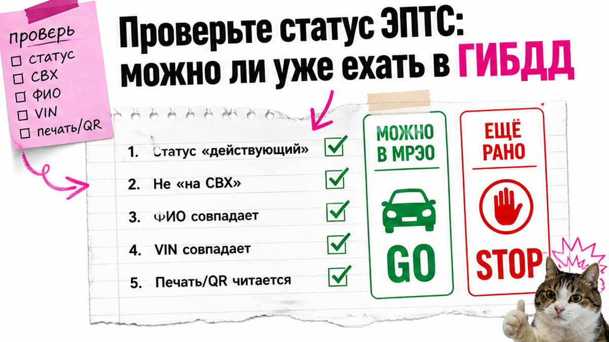
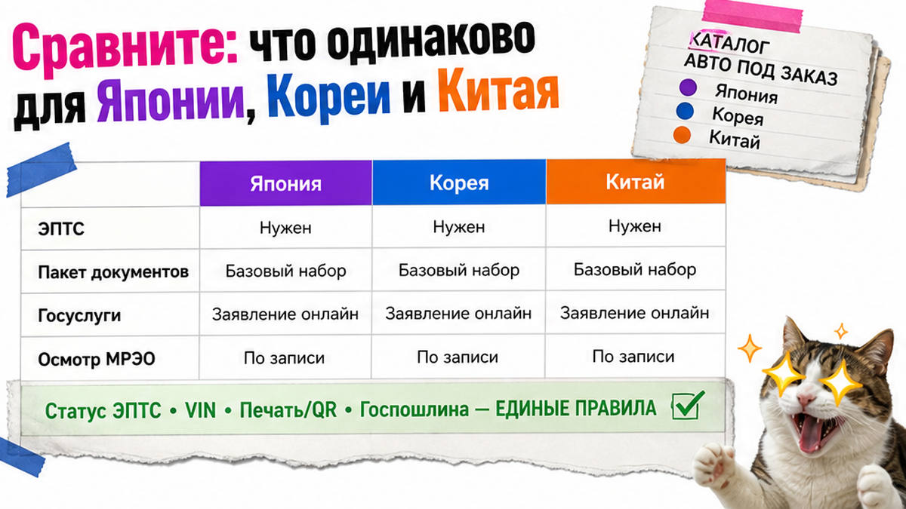

Менеджер пишет: "ЭПТС готов, можно на учёт". Вы записываетесь на Госуслугах, едете в МРЭО – а в системе статус "незавершённый", потому что утильсбор ещё не долетел. Инспектор разворачивает. Типичная боль и проблема после растаможки авто из Японии, Кореи или Китая: пакет вроде есть, а ехать рано. Ниже – чек-лист учёта 2026: что проверить до записи и какие документы брать.
Коротко: В ГИБДД идут только после статуса ЭПТС "действующий". ОСАГО с 01.03.2025 для регистрации не нужен, но ехать без полиса своим ходом нельзя. Для физлиц ЭРА-ГЛОНАСС до 31.12.2027 не обязательна. Срок постановки – 10 дней; ориентир госпошлины: номера около 3000 ₽ плюс СТС 1500 ₽ (бумага) или 4500 ₽ (пластик). Финиш: СТС и номера на руках.
Мы в Авто-Сейлс во Владивостоке часто видим одну сцену: человек прошёл таможню и СВХ, услышал "ЭПТС готов" и думает, что завтра – номера. Между паспортом и окошком есть проверка статуса. Гайд начинается после ЭПТС: без аукциона и без калькулятора утильсбора.

ЭПТС – электронный паспорт транспортного средства, запись о машине в системе, а не "синяя книжка" в бардачке. Пока статус не "действующий", постановка на учёт обычно невозможна. Типичная ошибка новичка: верить менеджеру и не открыть карточку паспорта самому.
На практике статусы разные: действующий, незавершённый, аннулированный. В МРЭО пускает только "действующий". "Незавершённый" часто висит из-за утильсбора или таможенных сведений, которые ещё не подтянулись.
Делать: проверять статус в день записи и ещё раз утром перед выездом. Не делать: ехать "на авось", надеясь, что инспектор пропустит незавершённый паспорт.
Схема до окошка:
Таможня / ТПО → СБКТС → ЭПТС оформлен → статус "действующий" → Госуслуги и госпошлина → осмотр в МРЭО → СТС и номера
СБКТС (сертификат безопасности конструкции) и таможенные бумаги – этапы до ЭПТС. В окошко ГИБДД несут итог цепочки, а не всю папку с СВХ. Не путайте ТПО/ДТ с заявлением на учёт.
Базовый пакет для постановки на учет авто из Японии, Кореи или Китая:
Делать: собрать папку "всё зелёное" и сфотографировать номера на кузове до поездки. Не делать: тащить лишние таможенные тома вместо проверки статуса ЭПТС.
Если машина ещё на СВХ или ЭПТС только обещают – сначала доведите статус до "действующий". Сопровождение заказа – в каталоге avto-sales125.ru и в Telegram @avtosales125.

Для ГИБДД ядро одно: действующий ЭПТС, право собственности, заявление, госпошлина, осмотр. Отличаются идентификатор и комплект ввозных бумаг, уже "зашитый" в паспорт.
| Параметр | Япония | Корея | Китай |
|---|---|---|---|
| Что смотрит ГИБДД | ЭПТС "действующий" + осмотр | То же | То же |
| Идентификатор | Часто номер кузова / фрейм | Обычно VIN | Обычно VIN |
| Риск новичка | Несовпадение маркировки и ЭПТС | Путать отчёты Encar с пакетом учёта | Неполный комплект переводов до ЭПТС |
| ОСАГО для регистрации | Не нужен с 01.03.2025 | Не нужен | Не нужен |
| ЭРА-ГЛОНАСС для физлица | Не обязательна до 31.12.2027 | Не обязательна | Не обязательна |
Делать: один чек-лист учёта плюс сверка номера кузова для японских машин. Не делать: искать "особые правила учёта для Китая", если речь уже про МРЭО после готового ЭПТС.
МРЭО – подразделение ГИБДД для регистрации и осмотра. Запись удобнее через Госуслуги: слот, госпошлина, визит с пакетом. Скидки 30% на пошлину через портал нет с 2023 года.
В реальном проекте отказ чаще из-за незавершённого ЭПТС, несовпадения VIN/кузова или ошибки в паспорте. В окошке не перепишут: правки – через уполномоченную организацию. При отказе просите письменную причину.
Делать: приезжать с запасом времени и подтверждением заявления. Не делать: записываться раньше статуса "действующий".
Сюрприз для читателей старых гайдов: с 1 марта 2025 ОСАГО не входит в пакет для регистрационных действий. Часть статей 2026 всё ещё требует страховку "для учёта" – это устарело для окошка. Но ехать без полиса нельзя: либо ОСАГО заранее, либо эвакуатор. Штраф за езду без полиса – отдельная история (ориентир 800 ₽).
ЭРА-ГЛОНАСС для физлиц при личном ввозе не обязательна до 31.12.2027. Для юрлиц и ИП требования жёстче – не переносите чужой кейс на себя.
Срок постановки – 10 дней. На практике отсчёт часто ведут от готовности ЭПТС; при доставке полезен акт приёма-передачи. Просрочка для граждан – 1500–2000 ₽. Защита – готовый пакет, а не запись "на авось".
Делать: решить маршрут до МРЭО и календарь 10 дней. Не делать: путать "не нужен для регистрации" с "можно ездить без страховки".
Критерий успеха и понятный результат: перед записью папка "всё зелёное", после визита вы получите СТС и номера. Сможете пройти список без галочек "потом".
Если всё зелёное – можно ехать. Красный пункт исправляете до поездки. Когда машина ещё в пути, разумнее закрыть ЭПТС до "действующего", чем ловить отказ в регионе.
Материал проверен: редакция Авто-Сейлс (эксперты по авто под заказ из Японии, Кореи и Китая).
Достоверность: факты сверены с открытыми источниками по ЭПТС, ГИБДД, 174-ФЗ об ОСАГО и мораторию на УВЭОС/ЭРА-ГЛОНАСС, плюс практика заказов во Владивостоке на 2026-10-06; расчёты по ввозу – у Авто-Сейлс.
Нужна помощь довести пакет до учёта – откройте каталог Авто-Сейлс. Офис: Владивосток, Днепровская 40а, стр. 4; без форм на этой странице.
Паспорт, заявление, документ о праве собственности, действующий ЭПТС, оплата госпошлины; при возрасте авто старше 4 лет – диагностическая карта. СБКТС и таможня – этапы до ЭПТС. Перед поездкой сверьте статус паспорта.
Для физлиц при личном ввозе УВЭОС/ЭРА-ГЛОНАСС по актуальным данным не обязательна до 31.12.2027. Для юрлиц и ИП требования другие. Не откладывайте учёт из-за мифа про обязательный блок для частника.
СБКТС подтверждает безопасность конструкции, ЭПТС – электронный паспорт после таможни и сертификации. Постановка на учёт – регистрация в ГИБДД: осмотр, СТС и номера. Без "действующего" ЭПТС в МРЭО рано.
Для регистрационных действий с 01.03.2025 полис не требуется. Для поездки своим ходом – нужен, иначе эвакуатор. Не путайте пакет для окошка и правила дорожного движения.
Ориентир – дата, когда появилось право пользоваться машиной и готов ЭПТС; при доставке фиксируйте акт приёма-передачи. Просрочка для граждан – 1500–2000 ₽. Не записывайтесь, пока статус ЭПТС не зелёный.
Не ехать в ГИБДД спорить. Уточните причину (часто утильсбор/таможня), дождитесь статуса "действующий". Ошибки в данных правят через уполномоченную организацию, не устно в очереди МРЭО.
Ориентир 2026: около 3000 ₽ за номера плюс 1500 ₽ за бумажное СТС (пластик – 4500 ₽). Это не утильсбор и не таможня. Точный расчёт ввоза машины запрашивайте у Авто-Сейлс отдельно.